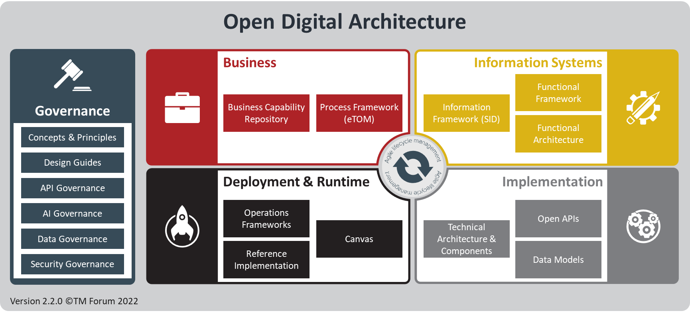

Introduction to the ODA Component Accelerator Project (ODA-CA)
The Open Digital Architecture
ODA is an enterprise architecture blueprint for modular, cloud native open digital platforms that can be orchestrated using AI. It is being developed and maintained by members of TM Forum. You can start learning about ODA here.

ODA Components are part of the Implementation quadrant of the ODA. They are standardized, reusable, microservices-based software building blocks of ODA, connected via Open APIs. ODA Components are deployed onto an ODA Canvas, which is in the Deployment & Runtime quadrant of the ODA. The Canvas provides a standardized execution platform aligning to Site Reliability Engineering practices.
Check if your company is already involved in developing ODA
If your company is a TM Forum member (check here), you can join the ODA collaboration projects here to contribute to ODA and influence its development.
If your company has signed the ODA manifesto, then it is already committed to ODA’s design principles and essential standards to enable a truly ‘plug and play’ set of technology capabilities.
The ODA-CA project
The ODA Component Accelerator (ODA-CA) is a practical project run by TM Forum member companies in our Open Digital Lab environment. The aims are:
Collaborative development of the ODA Canvas and ODA Reference Implementation(s) in order to validate ODA in real world applications
Building a test environment and tooling to validate vendors’ commercial products for conformance to the ODA Component specifications
Developing best practices for deployment of ODA Components and the ODA Canvas
Accelerating the ODA standards by contributing practical implementation experience back into the standardization process
Since the project started in December 2020 we have:
Built a reference ODA Canvas in our Open Digital Lab based on Kubernetes infrastructure
Delivered a prototype Component CTK which validates security and functional aspects of ODA Components using a 3-stage test platform in the Open Digital Lab
Deployed a number of commercial applications onto the reference Canvas and validated them with the prototype Component CTK
Demonstrated deployment patterns for security and observability use cases
Built a ‘click-to-deploy’ reference Canvas for TM Forum members to use
Read this presentation (updated Nov 2022) for more details about the ODA-CA project. If you’re interested in joining, please email accelerator@tmforum.org.
2024 demos and videos
ODA Canvas discussion with Vodafone, Deutsche Telekom, Oracle & TM Forum: video (18 min)
DTW23 demos
Demo of ODA Component and Canvas conformance testing (from DTW23): video (13 min)
Deploying and validating a Resource Inventory component on China Mobile’s public cloud ODA Canvas: video (5 min)
Validation of an ODA Canvas using the prototype Canvas CTK, showing BDD: video (5 min)
Deploying and validating an Ericsson Product Inventory component: video (2 min)
Earlier demo videos
Using an ODA Proxy Component for SaaS integration and other use cases: video (8 min)
Implementing identity & access management with the ODA Canvas: video (4 min)
Implementing observability with the ODA Canvas: video (8 min)
Deploying ODA Components on the ODA Canvas - API exposure and discovery: video (6 min)
Validation of an ODA Component using the prototype Component CTK: video (3 min)
Deploying Cloud Native Network Functions onto the ODA Canvas
Deployment of a CNF to an ODA Canvas running on two different cloud environments. The Canvas standardizes the environment to enable plug-and-play deployment on different cloud platforms (by Whale Cloud, 3 min demo video here)
Deployment of PCRF (4G) and PCF (5G) onto the same ODA Canvas, making 4G->5G upgrades and other use cases easy to achieve (by Sterlite, 5 min demo video here)
Current ODA-CA project members
alvatross by SATEC, Axiata Digital Labs, China Mobile, Ericsson, Global Wavenet, Hansen Technologies, Inetum, Microsoft, Oracle, Orange, OryxGateway, Sysbiz Technologies, Vodafone, Whale Cloud, Zira.